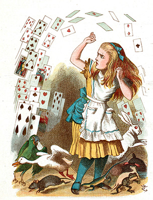

British illustrator, graphic humourist and political cartoonist best known for his work in Alice’s Adventures in Wonderland.
Despite the thousands of political cartoons and hundreds of illustrative works attributed to him, a measurable amount of Tenniel’s fame comes specifically from his work as the illustrator of Alice.
"He had an influence on the political feeling of this time which is hardly measurable...While Tenniel was drawing them (his subjects), we always looked to the Punch cartoon to crystallize the national and international situation, and the popular feeling about it—and never looked in vain."- Daily Graphic
Source: John Tenniel